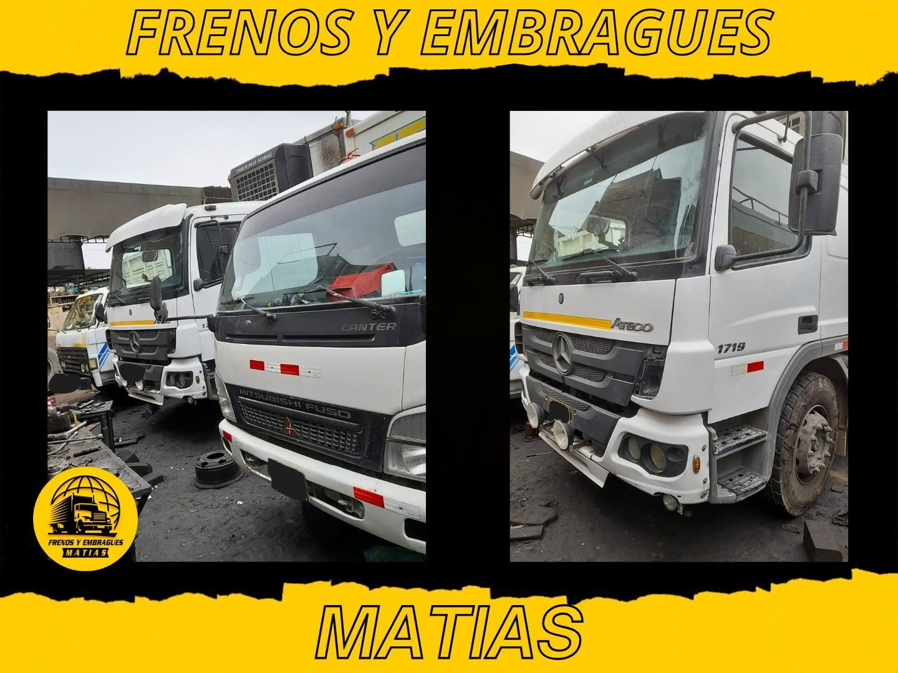
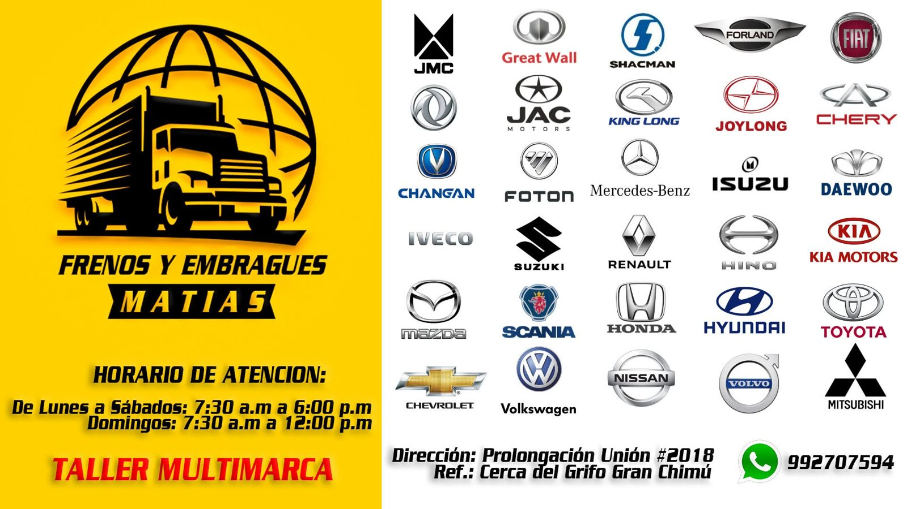
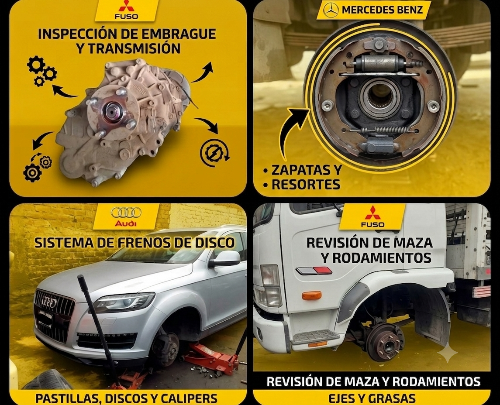

Tu taller de confianza para frenos y embragues
Diagnóstico oportuno, repuestos de calidad y garantía escrita en cada reparación. Más de una década cuidando la seguridad de tu vehículo.
Trabajamos con vehículos ligeros y pesados, todos los días
Camiones, tráileres y buses multimarca pasan por nuestro taller en Trujillo. Así se ve un día normal de trabajo.

Servicios especializados en frenos y embragues
Diagnóstico honesto, repuestos con respaldo y trabajo verificado antes de entregar tu vehículo.
Sistema de frenos
Cambio de pastillas y discos, rectificado, purgado de líquido y revisión de mordazas.
Ver detalle →Embrague y clutch
Cambio de kit de embrague, volante bimasa, collarín hidráulico y ajuste de pedal.
Ver detalle →Revisión pre-viaje
Chequeo completo del sistema de frenos y embrague antes de un viaje largo.
Ver detalle →Flotas y empresas
Mantenimiento programado para flotas de reparto, taxis y transporte de carga ligera.
Ver detalle →Un proceso claro, de principio a fin
Diagnóstico
Revisamos tu vehículo y te mostramos exactamente qué está fallando.
Cotización
Te indicamos el costo o enviamos por WhatsApp antes de tocar el vehículo. Sin sorpresas.
Reparación
Trabajo con repuestos de calidad y técnicos especializados en frenos y embrague.
Garantía
Damos garantía sobre mano de obra y repuestos instalados.
Más de 25 marcas, de autos a camiones pesados
Desde sedanes hasta tráilers Scania y Volvo: si tiene frenos o embrague, lo revisamos.

Aprende a cuidar tu vehículo
Guías prácticas sobre mantenimiento, señales de alerta y repuestos recomendados.

¿Cuándo cambiar las pastillas de freno?
Las 5 señales que indican que ya es momento de revisarlas, antes de que dañen el disco.

7 síntomas de que tu embrague está fallando
Del pedal esponjoso al olor a quemado: aprende a reconocerlos a tiempo.

Ver todos los artículos
Explora la guía completa de mantenimiento, repuestos recomendados y noticias del sector.
Lo que dicen quienes ya confiaron en nosotros
"Me explicaron exactamente qué tenía mal el freno y el precio fue el mismo que me cotizaron por WhatsApp."
"Cambié el kit de embrague completo y quedó como nuevo. Buena atención y rapidez."
"Uso el taller para toda mi flota de reparto. Cumplen tiempos y dan garantía."
Tu seguridad no espera. Tu freno tampoco debería.
Escríbenos y te respondemos en minutos con un diagnóstico claro y un precio justo.